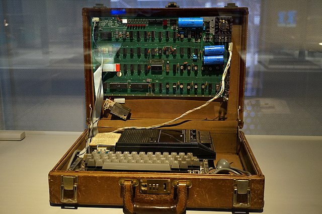

<!DOCTYPE html>
<html lang="en">
  <head>
    <meta charset="utf-8" />
    <meta name="viewport" content="width=device-width, initial-scale=1.0, maximum-scale=1.0, user-scalable=no" />

    <title></title>
    <link rel="stylesheet" href="dist/reveal.css" />
    <link rel="stylesheet" href="dist/theme/simple.css" id="theme" />
    <link rel="stylesheet" href="plugin/highlight/zenburn.css" />
	<link rel="stylesheet" href="css/layout.css" />
	<link rel="stylesheet" href="plugin/customcontrols/style.css">


    <script defer src="dist/fontawesome/all.min.js"></script>

	<script type="text/javascript">
		var forgetPop = true;
		function onPopState(event) {
			if(forgetPop){
				forgetPop = false;
			} else {
				parent.postMessage(event.target.location.href, "app://obsidian.md");
			}
        }
		window.onpopstate = onPopState;
		window.onmessage = event => {
			if(event.data == "reload"){
				window.document.location.reload();
			}
			forgetPop = true;
		}

		function fitElements(){
			const itemsToFit = document.getElementsByClassName('fitText');
			for (const item in itemsToFit) {
				if (Object.hasOwnProperty.call(itemsToFit, item)) {
					var element = itemsToFit[item];
					fitElement(element,1, 1000);
					element.classList.remove('fitText');
				}
			}
		}

		function fitElement(element, start, end){

			let size = (end + start) / 2;
			element.style.fontSize = `${size}px`;

			if(Math.abs(start - end) < 1){
				while(element.scrollHeight > element.offsetHeight){
					size--;
					element.style.fontSize = `${size}px`;
				}
				return;
			}

			if(element.scrollHeight > element.offsetHeight){
				fitElement(element, start, size);
			} else {
				fitElement(element, size, end);
			}		
		}


		document.onreadystatechange = () => {
			fitElements();
			if (document.readyState === 'complete') {
				if (window.location.href.indexOf("?export") != -1){
					parent.postMessage(event.target.location.href, "app://obsidian.md");
				}
				if (window.location.href.indexOf("print-pdf") != -1){
					let stateCheck = setInterval(() => {
						clearInterval(stateCheck);
						window.print();
					}, 250);
				}
			}
	};


        </script>
  </head>
  <body>
    <div class="reveal">
      <div class="slides"><section  data-markdown><script type="text/template"><!-- .slide: class="drop" data-background-opacity="0.5" data-background-image="disco.png" -->
<div class="" style="position: absolute; left: 0px; top: 0px; height: 700px; width: 960px; min-height: 700px; display: flex; flex-direction: column; align-items: center; justify-content: center" absolute="true">

# Online Cultures of the 1970s & Early 1980s
</div>

<aside class="notes"><p>Evolution of personal computers had gotten to the point where individual consumers could own a computer, own a modem</p>
<ul>
<li>in a way, some people acted like &#39;routers&#39; themselves, dialing into one service, then dialing into another, and forwarding materials/ideas along between these services.</li>
</ul>
<p>oh, someone was asking last day about the companies that provide the point where two networks come together &amp; exchange data? see <a href="https://en.wikipedia.org/wiki/Internet_exchange_point">https://en.wikipedia.org/wiki/Internet_exchange_point</a></p>
</aside></script></section><section  data-markdown><script type="text/template"><!-- .slide: class="drop" -->
<div class="" style="position: absolute; left: 0px; top: 0px; height: 700px; width: 960px; min-height: 700px; display: flex; flex-direction: column; align-items: center; justify-content: center" absolute="true">

## Evolution of Personal Computers


</div>

<aside class="notes"><p>with development of transistors and integrated chips, the kinds of things formerly done by valves and miles of wiring could be shrunk down. Intel releases the 8080 microprocessor chip in 1974; hobbyists and engineering students and whoever start tinkering. Pictured, Sol Terminal Computer ca 1978 - designed by Homebrew Computer Club president Lee Felsenstein; connects to a tv.</p>
</aside></script></section><section  data-markdown><script type="text/template"><!-- .slide: class="drop" -->
<div class="" style="position: absolute; left: 0px; top: 0px; height: 700px; width: 960px; min-height: 700px; display: flex; flex-direction: column; align-items: center; justify-content: center" absolute="true">


</div>

<aside class="notes"><p>homebrew computer club - 1978-19885 - menlo park, california. started by Gordon French and Fred Moore (Moore was a figure in draft resistence in the late 60s, 70s). Steve Wozniak and Stebe Jobs were members; Wozniak credits the very first meeting as where he comes up with the idea of the Apple i.</p>
</aside></script></section><section  data-markdown><script type="text/template"><!-- .slide: class="drop" -->
<div class="" style="position: absolute; left: 0px; top: 0px; height: 700px; width: 960px; min-height: 700px; display: flex; flex-direction: column; align-items: center; justify-content: center" absolute="true">


</div>

<aside class="notes"><p>This was the Altair 8800. This is what the homebrew computer club first met to discuss; was the first commercially popular &#39;minicomputer&#39;</p>
</aside></script></section><section  data-markdown><script type="text/template"><!-- .slide: class="drop" -->
<div class="" style="position: absolute; left: 0px; top: 0px; height: 700px; width: 960px; min-height: 700px; display: flex; flex-direction: column; align-items: center; justify-content: center" absolute="true">

<split even>




</split>
</div>

<aside class="notes"><p>1976 Wozniak and Jobs funded the original apple by selling their van, other possessions. The price is a 1/3 markup on the cost to produce (current dollars, anyone?) and they originally just sold the board so that other people could build from it. Connects directly to a tv, no more terminals/teletypes/flashing lights! AND could work with almost any commercial tape recorder for saving/loading data</p>
</aside></script></section><section  data-markdown><script type="text/template"><!-- .slide: class="drop" -->
<div class="" style="position: absolute; left: 0px; top: 0px; height: 700px; width: 960px; min-height: 700px; display: flex; flex-direction: column; align-items: center; justify-content: center" absolute="true">


</div>

<aside class="notes"><p>1977 was a big year. Apple designs &amp; releases the Apple II, aimed at consumers; Commodore releases the PET. &#39;PET&#39; doesn&#39;t originally stand for anything; just taking advantage of the fad for pet rocks and so on. Tandy TRS-80 (Tandy Radio Shack Z80). These three companies dominate the early personal computer market; they build in the BASIC programming language; they promote their machines at schools.</p>
</aside></script></section><section  data-markdown><script type="text/template"><!-- .slide: class="drop" -->
<div class="" style="position: absolute; left: 0px; top: 0px; height: 700px; width: 960px; min-height: 700px; display: flex; flex-direction: column; align-items: center; justify-content: center" absolute="true">

<split>


</split>
</div>

<aside class="notes"><p>I have to mention the vic 20 and the commodore 64; vic 20 in 1980, c64 in 1982; my story of early hacking</p>
<p>Services sprang up almost immediately to allow these computers to connect to bulletin board services (more on which in a moment) and indeed directly to other computers. Modems were sold as peripherals, and software to get online could be distributed on cartridges or casettes or later floppies packaged in magazines, or through writing in to a company &amp; providing a cheque, or....</p>
</aside></script></section><section  data-markdown><script type="text/template"><!-- .slide: class="drop" -->
<div class="" style="position: absolute; left: 0px; top: 0px; height: 700px; width: 960px; min-height: 700px; display: flex; flex-direction: column; align-items: center; justify-content: center" absolute="true">


</div>

<aside class="notes"><p>or indeed, by typing in the program yourself from code printed in magazines like Compute! which ran from 1979 - 1994.</p>
</aside></script></section><section  data-markdown><script type="text/template"><!-- .slide: class="drop" -->
<div class="" style="position: absolute; left: 0px; top: 0px; height: 700px; width: 960px; min-height: 700px; display: flex; flex-direction: column; align-items: center; justify-content: center" absolute="true">


</div>

<aside class="notes"><p>So there was a huge culture of tinkering, of fiddling around, of building things, of finding like minded individuals. it was an industry built on hobbyists. Similarly, there were people, animated by a whole raft of motivations including stick-it-to-the-man, who worked out how to mimic the sounds of digital data into phones, thus allowing them to circument AT&amp;T&#39;s long distance charges (the basis of its $ and power). This was &#39;toll fraud&#39;, an offense. A wide variety of techniques were developed; some of these were just out of curiosity, wanting to know how thigns worked. Some were not. Jobs &amp; Wozniak were part of that scene, too, helping to build the devices that phreakers used.  picture: &#39;blue box&#39;, a device to help phreaks phreak.</p>
</aside></script></section><section  data-markdown><script type="text/template"><!-- .slide: class="drop" -->
<div class="" style="position: absolute; left: 0px; top: 0px; height: 700px; width: 960px; min-height: 700px; display: flex; flex-direction: column; align-items: center; justify-content: center" absolute="true">

<iframe width="560" height="315" src="https://www.youtube.com/embed/hbqMuvnx5MU" title="YouTube video player" frameborder="0" allow="accelerometer; autoplay; clipboard-write; encrypted-media; gyroscope; picture-in-picture; web-share" allowfullscreen></iframe>

[An Oral History of WarGames](https://web.archive.org/web/20110712221432/http://www.wired.com/entertainment/hollywood/magazine/16-08/ff_wargames?currentPage=all)
</div>

<aside class="notes"><p>plot: &quot;High schooler David Lightman (played by 21-year-old Matthew Broderick) is a digitally proficient goofball who wants to play an unreleased computer game — and impress a pretty girl (Ally Sheedy). So he does something most Americans didn&#39;t have a word for back then: He starts hacking. Little does he know, the &quot;computer company&quot; he&#39;s infiltrated is actually a military installation running a missile-command supercomputer called the WOPR (War Operation Plan Response), and the game — Global Thermonuclear War — is real. Naturally, only David can stop it from setting off World War III.&quot;</p>
<p>it was not uncommon for people to randomly dial numbers (using techniques from phreaking, too) looking for data lines into computers. The producers actually talked to a phreak, John Draper aka &#39;Captain Crunch&#39;, who explained about the use of scanners looking for numbers. (Capn Crunch - toy in the cereal box emitted a tone at precisely the same frequency AT&amp;T used to control things). Draper also happened to design a kind of modem device for the Apple II, commissioned by Wozniak, though it never got built; also designed the wordprocessor for the Apple II. </p>
<ul>
<li>introduces the ideas of &#39;hacking&#39; to a wide audience</li>
<li>even leads to one phreak, Kevin Mitnik (arrested in 1988) getting extra solitary confinement, based on fears from the movie - or so <em>he</em> says</li>
<li>more importantly: Reagan sees the film, makes his cabinet watch it; the fears this prompts find expression in updates and modifications to law. - films were all full of soviet paranoia at the time, and fear of nuclear war., congress prepares a report, and finds the movie is a &#39;realistic representation of access capabilities&#39;</li>
</ul>
</aside></script></section><section  data-markdown><script type="text/template"><!-- .slide: class="drop" -->
<div class="" style="position: absolute; left: 0px; top: 0px; height: 700px; width: 960px; min-height: 700px; display: flex; flex-direction: column; align-items: center; justify-content: center" absolute="true">


</div>

<aside class="notes"><p>2 <a href="https://en.wikipedia.org/wiki/Computer_Fraud_and_Abuse_Act">https://en.wikipedia.org/wiki/Computer_Fraud_and_Abuse_Act</a> - previous unwarranted access framed as wire fraud or mail fraud. now makes &#39;unauthorized access&#39; or &#39;access beyond authorization&#39; crimes; the law continues to be expanded, folded in with patriot act post 9/11; (patriot law exemptions expired in 2020). Suffice it to say, a bit of a moral panic with concrete consequences. Remember that &#39;security&#39; was never a feature of the design of the protocols for computer-to-computer transmission; that the fundamental action of the computer is to copy (goes back to Turing machine, even Babbage).</p>
</aside></script></section><section  data-markdown><script type="text/template"><!-- .slide: class="drop" -->
<div class="" style="position: absolute; left: 0px; top: 0px; height: 700px; width: 960px; min-height: 700px; display: flex; flex-direction: column; align-items: center; justify-content: center" absolute="true">


[You can still use BBS](https://www.howtogeek.com/686600/remember-bbses-heres-how-you-can-visit-one-today/)
</div>

<aside class="notes"><p>a bulletin board system was a way for a computer to answer a phone call, provide data to the other end, then hang up again. A kind of asynchronous service. Upload/download files, leave messages. Some would let you login, download all your messages/files, read &amp; respond to them, then the next time you logged in, all your responses would be uploaded. Think a combination of reddit &amp; early myspace. And if you don&#39;t know myspace, go look it up. By some accounts, the first BBS was by the Chicago Computer Users Club, when in 1978 a big snowstorm prevented them from meeting. One of the club&#39;s members had a modem, and he set up a basic message board on his own machine in his own apartment, allowing a &#39;virtual&#39; meeting.</p>
<p>Fidonet - Tom Jennings (one of many queer figures in computing history) figures out a way to get BBS out of their isolation and to talk to each other. He writes a program called FIDO for IBM pc&#39;s running MS-DOS, to let people set up their own BBS. But he adds a feature to it to let one BBS call another and swap data. Fidonet is born, a store and forward type network. Initially only email being swapped, but because he made it open, people build it into other BBS services.</p>
<p>wargames introduces the idea of bbs to a wider audience, and numbers explore. Early commercial online services like Prodigy, America Online, and Compuserve were largely bulletin board services with a few additional bells and whistles; others like the Well (1985) whole earth &#39;lectronic link were more diy ish. These early and mid 80s services taught an entire generation how to &#39;be&#39; online, and many of these ways-of-being can be traced back to Community Memory and Reource One. Stacy Horn, ran the extermely influential &#39;The Echo&#39; out of her appartment in New York - made having women part of the governance and organization of the BBS a key part; the Echo is still online - <a href="https://www.echonyc.com/">https://www.echonyc.com/</a></p>
<p>more info: <a href="https://spectrum.ieee.org/social-medias-dialup-ancestor-the-bulletin-board-system">https://spectrum.ieee.org/social-medias-dialup-ancestor-the-bulletin-board-system</a></p>
<p>untangling all of these - including things like BITNET (which was a store-and-forward network that started in 1981, connecting universities in the US and Canada) - would make excellent entries for your final Memex. Especially BITNET - look into its Canadian dimensions</p>
</aside></script></section><section  data-markdown><script type="text/template"><!-- .slide: class="drop" -->
<div class="" style="position: absolute; left: 0px; top: 0px; height: 700px; width: 960px; min-height: 700px; display: flex; flex-direction: column; align-items: center; justify-content: center" absolute="true">


Stacy Horn, The Echo
</div>

<aside class="notes"><p><em>anyone</em> could set up a BBS. And so BBS&#39;s became these amazing carnivals of different people, united by shared interests. Every BBS had its own social norms, expectations. It kinda reminds me of picking a server to join for Fediverse type software (aka mastodon). It was personal, intimate. A place of connection. And because of telephone bills, it required a certain creativity to work around the limitations this imposed. For Horn, she got so much traffic that the new york phone company had to lay a dedicated data line down her street.</p>
</aside></script></section><section  data-markdown><script type="text/template"><!-- .slide: class="drop" -->
<div class="" style="position: absolute; left: 0px; top: 0px; height: 700px; width: 960px; min-height: 700px; display: flex; flex-direction: column; align-items: center; justify-content: center" absolute="true">

Other countries take a different approach - eg, France & Minitel, 1981


</div>

<aside class="notes"><ul>
<li>france telecom offers free terminals, creating effectively a national bulletin board service, users pay by the minute; but individual services (ie, sites/servers) can connect to this service, france telecom takes a cut of $ for time spent on the services. train schedules, email, news, tax filing, chat... similar services tried in other countries but don&#39;t take off. Minitel lasts until well into the 2000s. (I remember something similar on british tv in the 90s, greatly reduced function though)</li>
</ul>
<p>so... what I&#39;m getting at... is that people are learning how to <em>be</em> online, and it is a spectacularly messy thing.</p>
</aside></script></section><section  data-markdown><script type="text/template"><!-- .slide: class="drop" -->
<div class="" style="position: absolute; left: 0px; top: 0px; height: 700px; width: 960px; min-height: 700px; display: flex; flex-direction: column; align-items: center; justify-content: center" absolute="true">

<split>


</split>
</div>

<aside class="notes"><p>university illinois urbana-champaign begins in early 1960s thinking about how computers might be used in education. Don Bitzer, phd student in CS talking with Chalmers Sherwin (in aftermatch of sputnik launch and fears US was falling behind educationally) asked, why couldn&#39;t computers be used in education? &#39;a book with feedback&#39;. They design a system, and install terminals, in hundreds of schools over the 1960s and 1970s. The system has graphics, simulations, forums, messages, pretty much everything we know and love about learning management systems today. As microcomputers/personal computers developed, they tried to port it from the mainframe system to work with eg IBM pcs, but it wasn&#39;t really working out; they even create a version for the Source, another early online service for dial-in modem users (bought by Reader&#39;s Digest, as it happens).
6 PLATO and xanadu and mother of all demos giving us a template for how to interact with a computer <a href="https://arstechnica.com/gadgets/2023/03/plato-how-an-educational-computer-system-from-the-60s-shaped-the-future/">https://arstechnica.com/gadgets/2023/03/plato-how-an-educational-computer-system-from-the-60s-shaped-the-future/</a> (for history of edtech see Audrey Watters)</p>
</aside></script></section><section  data-markdown><script type="text/template"><!-- .slide: class="drop" -->
<div class="" style="position: absolute; left: 0px; top: 0px; height: 700px; width: 960px; min-height: 700px; display: flex; flex-direction: column; align-items: center; justify-content: center" absolute="true">

<iframe width="560" height="315" src="https://www.youtube.com/embed/VtvjbmoDx-I" title="YouTube video player" frameborder="0" allow="accelerometer; autoplay; clipboard-write; encrypted-media; gyroscope; picture-in-picture; web-share" allowfullscreen></iframe>
</div>

<aside class="notes"><p>meanwhile, over at Xerox, the evolution of Plato, douglas engelbert&#39;s mother of all demos, ted nelson&#39;s vaporware &#39;xanadu project&#39; gets realized in a workstation type computer (smaller than a microcomputer, bigger than a minicomputer/pc) called the ALTO. The Alto has a graphical user interface; this inspires Wozniak &amp; the creation of the Lisa and the Macintosh, 1984
7 which helps XEROX PARC&#39;s user system (name?) and thence to Steve Jobs</p>
<ul>
<li>advertisement directed by ridley scott; promising a revolution!</li>
</ul>
</aside></script></section><section  data-markdown><script type="text/template"><!-- .slide: class="drop" -->
<div class="" style="position: absolute; left: 0px; top: 0px; height: 700px; width: 960px; min-height: 700px; display: flex; flex-direction: column; align-items: center; justify-content: center" absolute="true">

<split>


</split>
</div>

<aside class="notes"><p>10 games! access to MUDs - bbs? See Aaron what&#39;shisname <a href="https://if50.substack.com/p/1980-mud">https://if50.substack.com/p/1980-mud</a>
Multi-User Dungeon - Students at Exeter in the UK, on a big mainframe, discovered a flaw in the programming which meant that they could write data to a certain location. Thus, they could take a game like Colossal Cave Adventure - Adventure - Zork and let the players themselves add locations, descriptions, and actions. Richard Bartle and Roy Trubshaw,
re the images see <a href="http://archeogaming.blogspot.com/2012/10/multi-user-dungeons-retro-vision-from.html">http://archeogaming.blogspot.com/2012/10/multi-user-dungeons-retro-vision-from.html</a></p>
</aside></script></section><section  data-markdown><script type="text/template"><!-- .slide: class="drop" -->
<div class="" style="position: absolute; left: 0px; top: 0px; height: 700px; width: 960px; min-height: 700px; display: flex; flex-direction: column; align-items: center; justify-content: center" absolute="true">

The plot so far:
- the emergence of personal computers
- the emergence of BBS and other online services that are *not* the internet  
- Remember, the other kind of 'computer' most people would be familiar with would be the Atari video game console (and similar)
	- playing games -> desire to connect -> WarGames -> regulatory climate
	- playing games -> technological innovation
</div>

<aside class="notes"><p>driven by hobbyists looking to tinker and people looking to find community (and in some cases, by gov&#39;ts.)</p>
<ul>
<li>and games. Lots and lots of games!</li>
</ul>
</aside></script></section><section  data-markdown><script type="text/template"><!-- .slide: class="drop" -->
<div class="" style="position: absolute; left: 0px; top: 0px; height: 700px; width: 960px; min-height: 700px; display: flex; flex-direction: column; align-items: center; justify-content: center" absolute="true">

A quick digression on video game history

<split>


</split>

[Play Spacewar! here](https://www.masswerk.at/spacewar/)
</div>

<aside class="notes"><p>1977 prototype for the atari video computer system; atari graveyard; spacewar 1962; gendering of video games after the 1983 crash, when toy companies end up buying/taking over . The video game cartridge was invented by engineer Jerry Lawson, for a console called the Fairchild F in 1976; commercial flop, but cartridges become THE way for games to be distributed. Lawson was also a member of the homebrew computer company, once interviewed Wozniak for a job at Fairchild. Goes on to write games for Atari. And games beget magazines, and BBS looking for people to swap games, hints, tips, talk strategy, etc.</p>
</aside></script></section><section  data-markdown><script type="text/template"><!-- .slide: class="drop" -->
<div class="" style="position: absolute; left: 0px; top: 0px; height: 700px; width: 960px; min-height: 700px; display: flex; flex-direction: column; align-items: center; justify-content: center" absolute="true">

- these early communities give people a sense of how to *be* , via a computer
- because a lot of the early games were about recreating a sense of an actual place, my contention: these actually *were* places, for all intents and purposes.
- they were someplace you *went.* Your body might be here, but your mind & social world were elsewhere.
</div>

<aside class="notes"><p>By 1979, only 16 arpanet notes were academic; the 46 remaining were military; 1983 those military ones spun off into MILNET; ARPANET shut down in 1989. So, while the TCP/IP protocols for how networks and computers might communicate originate in ARPANET (remember, the story is more complicated than that), other protocols, other groups, other networks, and other ways of doing data communication have emerged.</p>
<p>Indeed, a number of CS departments in the states NOT on ARPANet managed to convince the NSF in 1981 to pony up cash for a leaner network, the CSNET (computer science research network). It offered different tiers of connectivity - just email, for instance- and soon had more than 70 sites by 1983; used TCP/IP; unlike arpanet, the finances of this arrangement worked better, and the NSF agreed to build a &#39;backbone&#39; connecting up the supercomputing centres that <em>it</em> funded. 1986. This was the NSFNET and it was a super high speed connection The NSF also agreed to allow commercial access to NSFNET in 1</p>
</aside></script></section><section  data-markdown><script type="text/template"><!-- .slide: class="drop" -->
<div class="" style="position: absolute; left: 0px; top: 0px; height: 700px; width: 960px; min-height: 700px; display: flex; flex-direction: column; align-items: center; justify-content: center" absolute="true">

And while we might make diagrams like this, this is *not* how it felt like to be 'online'.


</div>

<aside class="notes"><p>so this is roughly how things look by the early 1980s. I don&#39;t like this image, but it&#39;s the best I could find right now.</p>
</aside></script></section><section  data-markdown><script type="text/template"><!-- .slide: class="drop" -->
<div class="" style="position: absolute; left: 0px; top: 0px; height: 700px; width: 960px; min-height: 700px; display: flex; flex-direction: column; align-items: center; justify-content: center" absolute="true">

Where the people go, capitalism is sure to follow. It just depends on having the right metaphor.

[Explore Chapter 1 of 'Hidden Systems'](https://s3.documentcloud.org/documents/23713012/nott_9781984896049_sprd-1.pdf) by Dan Nott (see also [this review](https://www.theverge.com/2023/3/17/23645204/hidden-systems-book-internet-water-power))
</div>

<aside class="notes"><p>next day we&#39;ll explore the history of hypertext, and what happened when access to the internet became commercialized. We&#39;ll probably have to talk about Al Gore.</p>
</aside></script></section><section  data-markdown><script type="text/template"><!-- .slide: class="drop" -->
<div class="" style="position: absolute; left: 0px; top: 0px; height: 700px; width: 960px; min-height: 700px; display: flex; flex-direction: column; align-items: center; justify-content: center" absolute="true">

## Exercise - A Knowledge Graph / Social Network

- who is connected to whom?
- scour your memex for individuals and organizations
- eg, you find 'Charles Williams jr', 'Alexander Graham Bell' 
- or 'Vannevar Bush' and 'von Neumann'
- think about the *directionality* of that relationship 
- Record your findings here:
	- [this sheet](https://docs.google.com/spreadsheets/d/19KBKE2RFZBzsLmUQ--1dRXj9w8zz1Pu4HjoKnXN2diU/edit?usp=sharing)
- find at least 5 pairs
</div></script></section><section  data-markdown><script type="text/template"><!-- .slide: class="drop" -->
<div class="" style="position: absolute; left: 0px; top: 0px; height: 700px; width: 960px; min-height: 700px; display: flex; flex-direction: column; align-items: center; justify-content: center" absolute="true">


<small> [link](https://edisciplinas.usp.br/pluginfile.php/4865899/mod_resource/content/0/The%20Strength%20of%20Weak%20Ties.pdf) see also this piece by [Padgett & Ansell](https://www-jstor-org.proxy.library.carleton.ca/stable/pdf/2781822.pdf) </small>

Then we'll drop our network into [Network Navigator](https://networknavigator.jrladd.com/)

- Who or what has the highest 'betweeness'? What might that mean?
- Who or what has the highest 'eigenvector centrality'? What might that mean?
- Capture a screenshot of the visualization for your notes; write up your thoughts
</div>

<aside class="notes"><p>By creating a simple visualization, based on what we can find in our notes, we can start to discover, much like the &#39;paul revere&#39; visualization we saw in an earlier class, some of the possibilities for understanding how social structure &amp; agency can intersect</p>
<p> Going further with <a href="https://gephi.org">Gephi.org</a>
    - another metric we ofent might want: community detection</p>
<ul>
<li>Even further with a graph embedding model (if you know python, you can do this)</li>
</ul>
</aside></script></section></div>
    </div>

    <script src="dist/reveal.js"></script>

    <script src="plugin/markdown/markdown.js"></script>
    <script src="plugin/highlight/highlight.js"></script>
    <script src="plugin/zoom/zoom.js"></script>
    <script src="plugin/notes/notes.js"></script>
    <script src="plugin/math/math.js"></script>
	<script src="plugin/mermaid/mermaid.js"></script>
	<script src="plugin/chart/chart.min.js"></script>
	<script src="plugin/chart/plugin.js"></script>
	<script src="plugin/customcontrols/plugin.js"></script>

    <script>
      function extend() {
        var target = {};
        for (var i = 0; i < arguments.length; i++) {
          var source = arguments[i];
          for (var key in source) {
            if (source.hasOwnProperty(key)) {
              target[key] = source[key];
            }
          }
        }
        return target;
      }

	  function isLight(color) {
		let hex = color.replace('#', '');

		// convert #fff => #ffffff
		if(hex.length == 3){
			hex = `${hex[0]}${hex[0]}${hex[1]}${hex[1]}${hex[2]}${hex[2]}`;
		}

		const c_r = parseInt(hex.substr(0, 2), 16);
		const c_g = parseInt(hex.substr(2, 2), 16);
		const c_b = parseInt(hex.substr(4, 2), 16);
		const brightness = ((c_r * 299) + (c_g * 587) + (c_b * 114)) / 1000;
		return brightness > 155;
	}

	var bgColor = getComputedStyle(document.documentElement).getPropertyValue('--r-background-color').trim();
	var isLight = isLight(bgColor);

	if(isLight){
		document.body.classList.add('has-light-background');
	} else {
		document.body.classList.add('has-dark-background');
	}

      // default options to init reveal.js
      var defaultOptions = {
        controls: true,
        progress: true,
        history: true,
        center: true,
        transition: 'default', // none/fade/slide/convex/concave/zoom
        plugins: [
          RevealMarkdown,
          RevealHighlight,
          RevealZoom,
          RevealNotes,
          RevealMath.MathJax3,
		  RevealMermaid,
		  RevealChart,
		  RevealCustomControls,
        ],


    	allottedTime: 120 * 1000,

		mathjax3: {
			mathjax: 'plugin/math/mathjax/tex-mml-chtml.js',
		},
		markdown: {
		  gfm: true,
		  mangle: true,
		  pedantic: false,
		  smartLists: false,
		  smartypants: false,
		},

		mermaid: {
			theme: isLight ? 'default' : 'dark',
		},

		customcontrols: {
			controls: [
			]
		},
      };

      // options from URL query string
      var queryOptions = Reveal().getQueryHash() || {};

      var options = extend(defaultOptions, {"width":960,"height":700,"margin":0.04,"controls":true,"progress":true,"slideNumber":false,"transition":"fade","transitionSpeed":"default"}, queryOptions);
    </script>

    <script>
      Reveal.initialize(options);
    </script>
  </body>

  <!-- created with Advanced Slides -->
</html>
